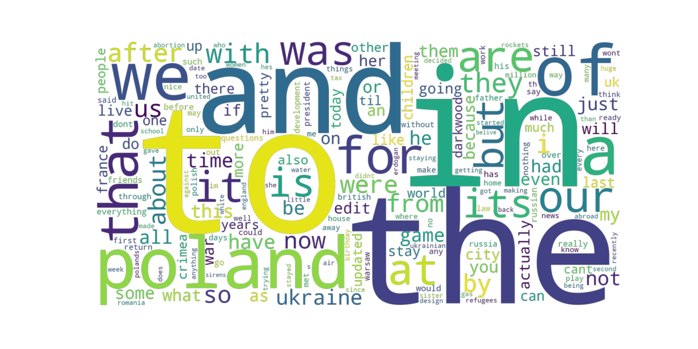

| Query: | Poland | Fetched and analyzed: | 65.813 sec | Number of Posts: | 3000 | Generated: | 2025-01-12 12:58:01 |
| Query category: | top | Query time filter: | all time | Safe mode: | on | Time elapsed from data fetch: |
|
| Value: | Label: | |
| Minimal Polarity: | -0.9 | Negative |
| Maximal Polarity: | 0.99 | Positive |
| Average Polarity: | -0.1 | Neutral |
Sentiment Distribution:
Sentiment Distribution with Score:
| Positive: |
|---|
| Distribution: | ||||
| Label: | Post Number: | Positive: | Neutral: | Negative: |
| Posts Distribution: | 1 | 7.5 | 7.5 | 2 |
| Posts Distribution with Score: | 1 | 1887.5 | 8343.5 | 481 |
| Posts Distribution: | 2 | 15 | 1.5 | 0.5 |
| Posts Distribution with Score: | 2 | 17976 | 525.5 | 477.5 |
| Posts Distribution: | 3 | 7.0 | 8.0 | 2 |
| Posts Distribution with Score: | 3 | 7212.0 | 16326.0 | 1358 |
Positive Line Chart:
| Post 1: |
|---|
| Details: | ||||||||
| Post Number: | Title: | Selftext: | Score: | Date and Time: | Post Sentiment Opinion: | Subreddit: | Author: | Post: |
| 1 | [OC] Me and my sister after 3 days ride, hoping to cross to Poland tomorrow | 156779 | 2022-02-26 19:43:18 | Neutral Positive | Positive | Positive | Positive | |
| Top Comments: | |||
| Comment Number: | Score: | Text: | Sentiment Opinion: |
| 1 | 2954 | they did the same to a beach in romania | Neutral |
| 2 | 2136 | This is the world I want to live in. | Neutral |
| 3 | 1871 | Same happend in Turkey. Some Ukrainians Cleaned Antalya for Thanking. Idk what other Turks are thinking about them but In my eyes, from now on Its their country too 🇹🇷❤️🇺🇦 | Neutral |
| 4 | 921 | A good friend hosted Bosnian refugees in the 90s. They cleaned the apartment and whole neighborhood, it seemed. | Positive |
| 5 | 887 | It's also their country now! We together!🇵🇱🇺🇦 | Neutral |
| Post 2: |
|---|
| Details: | ||||||||
| Post Number: | Title: | Selftext: | Score: | Date and Time: | Post Sentiment Opinion: | Subreddit: | Author: | Post: |
| 2 | These are Ukrainian refugees after cleaning up a park in Poland as a thank you for hosting them. They're organising these things all over Poland now | 124773 | 2022-04-12 09:44:48 | Neutral Positive | Positive | Positive | Positive | |
| Top Comments: | |||
| Comment Number: | Score: | Text: | Sentiment Opinion: |
| 1 | 9351 | We are all waiting for you in Poland, feel free to ask questions if you need any info or place to stay here in commente, on r/polska or r/poland, in dms. Stay safe! | Positive |
| 2 | 3869 | Good Luck! And may the force be with you! | Positive |
| 3 | 1954 | Good luck! 🇺🇦 | Positive |
| 4 | 968 | Didn’t you have two sisters with you? Is she okay too? You are so brave. I send you hugs from afar in California. Maybe someday you can visit our beautiful state. | Positive |
| 5 | 955 | Essential Rules for Civilian Refugees Evacuating Rule 1.) DIRECTION - Both Russia and Belarus are attacking from the Sumy, Chernihiv, Luhansk, Odessa, Chernihiv Region's and Highways (especially those that run North to South). Avoid these highways if you are close to their borders: North of Kyiv - E95, E373, P02, P13, P28, P56, P65, P69. South of Xepcoh - E97, E105, M14, P37, P47, P57, East of Dnipro - E50, H20, M03, N15, P66, T0406, T0428, T0504, T0515 North East of Poltava (Around Kahkiv) - E105, M03, M18, P46, P78, P79, T2103, T2104, T2106, T2111, T2113 Evacuate South West towards Moldova, Romania, and Poland if you can do so Safely. (The Sun rises on the East and Sets on the West.) Avoid! the North Border with Belarus, the South East near Odessa and Crimea, and East Towards Russia. Avoid! the Highways especially neay Kyiv and routes with large amounts of traffic. Avoid! the Traveling at night, you can be suspected of being Russian infantry and fired upon by accident. Avoid! splitting up any friends or family members. Always! maintain a visual and hearing distance. Rule 2.) PERSONAL NEEDS - Pack all of the following in this order; Non-Perishable Foods (Granola Bars, Canned Goods, Cereal), Heating and Firestarters such as (Matches and Lighters / Papers and Books ), and Clothing for "at Minimum" of Five Days Can-Opener and/or Knife, Prescription Drugs, Toiletries (Soap, Hand Sanitizer, Toilet Paper, Towels), and First Aid Kits Civilian Identification Papers (Birth Certificates, Drivers Licenses, Blood Type, Passports, Child Documents, Etc.), Compasses, and Maps Batteries, Power Cords, Flashlights Entertainment (Playing Cards and Dice) Easy rule of thumb to follow, 6 Liters of Water per Person is enough for 24 hours. 1 liter for breakfast (0.5 to drink, 0.5 to boil for your food) 1 liter for lunch 1 liter for dinner 1 liter extra for sanitation (washing hands) or if you get extra thirsty. Boil Water for at least 1 to 5 minutes to kill most contaminants. Rule 3.) LOCATION - Do not visit or stop for non essential or untrustworthy locations, if it's too good to be true, it probably is! This includes Banks and Strangers Homes (Anyone that can easily overpower you and your families). Rule 4.) ELECTRONICS - Sooner or later your Internet or Electronics will Fail, usually in this order. Alleviate any chance of disaster by downloading Google Maps and Translate Offline and or using Paper Maps. Write down necessary information including Blood Type, Phone Numbers, Addresses, and Directions before your Electronics fail and Write down necessary information in multiple safe locations. Avoid! Using important electronic devices for unnecessary activities such as Entertainment, you want your Cell Phone / Radio usage at a Minimum. Please share this Comment’s Link! This is important and crucial information for anyone within or evacuating Ukraine! https://www.reddit.com/r/ukraine/comments/t05nkx/essential_rules_for_civilian_refugees_evacuating/?utm_source=share&utm_medium=ios_app&utm_name=iossmf Rough Ukrainian Translation of this Post with Google Translate: https://www.reddit.com/r/Ukraine_UA/comments/t06lc4/основні_правила_для_евакуації_цивільних_біженців/?utm_source=share&utm_medium=web2x&context=3 | Neutral Negative |
| Post 3: |
|---|
| Details: | ||||||||
| Post Number: | Title: | Selftext: | Score: | Date and Time: | Post Sentiment Opinion: | Subreddit: | Author: | Post: |
| 3 | Poland and Denmark exclude tax haven companies from coronavirus relief schemes | 95583 | 2020-04-20 09:42:00 | Neutral Positive | Positive | Positive | Positive | |
| Top Comments: | |||
| Comment Number: | Score: | Text: | Sentiment Opinion: |
| 1 | 11593 | I approve of this message! | Neutral |
| 2 | 3435 | >Last year groundbreaking research found Britain was by far the biggest enabler of global corporate tax dodging. >Of the top 10 countries allowing multinationals to avoid paying billions in tax on their profits, four are British overseas territories. >An index published today by the Tax Justice Network found that the UK has “single-handedly” done the most to break down the global corporate tax system **which loses an estimated $500bn (£395bn) to avoidance**. You could literally end world hunger with that much money | Neutral |
| 3 | 3133 | You can’t take out from the system if you havnt put your fair share in | Positive |
| 4 | 2131 | That is the right move. Who only tries to "optimise" the tax should expect the solidarity from the low tax places first hand. | Positive |
| 5 | 1302 | Should do that here in the uk, stop that cunt branson getting a bailout. | Negative |
| Neutral: |
|---|
| Distribution: | ||||
| Label: | Post Number: | Positive: | Neutral: | Negative: |
| Posts Distribution: | 1 | 6.0 | 10.0 | 1 |
| Posts Distribution with Score: | 1 | 2056.5 | 17686.5 | 228 |
| Posts Distribution: | 2 | 10.5 | 6.5 | 0 |
| Posts Distribution with Score: | 2 | 17754.0 | 15599.0 | 0 |
| Posts Distribution: | 3 | 2.5 | 8.5 | 6.0 |
| Posts Distribution with Score: | 3 | 954.0 | 6741.0 | 9495.0 |
Neutral Line Chart:
| Post 1: |
|---|
| Details: | ||||||||
| Post Number: | Title: | Selftext: | Score: | Date and Time: | Post Sentiment Opinion: | Subreddit: | Author: | Post: |
| 1 | Christmas in rural Poland — through the eyes of my 3-year-old cousin | 172066 | 2024-12-30 21:32:26 | Neutral | Positive | Negative | Negative | |
| Top Comments: | |||
| Comment Number: | Score: | Text: | Sentiment Opinion: |
| 1 | 7302 | Someone should set a glass on the edge of the mountain for it to knock off. | Neutral |
| 2 | 6573 | Cat thinking: “damn it if these humans aren’t everywhere.” | Neutral |
| 3 | 1871 | Meowtaineer | Neutral |
| 4 | 1278 | What a lucky spawn | Neutral Positive |
| 5 | 917 | O’ Cat of the Polish Peak, what is your wisdom? | Positive |
| Post 2: |
|---|
| Details: | ||||||||
| Post Number: | Title: | Selftext: | Score: | Date and Time: | Post Sentiment Opinion: | Subreddit: | Author: | Post: |
| 2 | Climbers ascend to the highest peak of Poland and find a cat at the summit | 135492 | 2024-08-22 05:33:15 | Neutral | Positive | Positive | Positive | |
| Top Comments: | |||
| Comment Number: | Score: | Text: | Sentiment Opinion: |
| 1 | 13366 | This reminds me so much of looking through the old family photo albums that my grandparents had at their house. I really enjoyed these. Thank you for sharing, and thank your cousin, too!! | Positive |
| 2 | 9888 | Your cousin do weddings? | Neutral |
| 3 | 4447 | The kid's photography technique could use a little more polish. | Neutral |
| 4 | 1909 | These photos are precious! And are those ornaments made out of yarn? They are beautiful! Are they traditional Polish craft? | Positive |
| 5 | 1100 | This gave me a warm sense of nostalgia | Neutral Positive |
| Post 3: |
|---|
| Details: | ||||||||
| Post Number: | Title: | Selftext: | Score: | Date and Time: | Post Sentiment Opinion: | Subreddit: | Author: | Post: |
| 3 | About 100,000 people take to the streets of Warsaw Poland to oppose tightened abortion law | 101380 | 2020-10-31 20:12:55 | Neutral | Positive | Positive | Positive | |
| Top Comments: | |||
| Comment Number: | Score: | Text: | Sentiment Opinion: |
| 1 | 6642 | In Czech Republic, November 2019, we did a 400 000 protest for our corrupt and incompetent government to step off, though till now, none of them seem to give a shit. | Negative |
| 2 | 4015 | Covid cases in Poland next week 📈 | Neutral |
| 3 | 1908 | It absolutely boggles the mind that these record breaking protests can happen and politicians can still get away with ignoring them | Negative |
| 4 | 982 | It’s a covid party! | Neutral Positive |
| 5 | 968 | The horrible part about COVID is that it can be used to cast shame on people fighting for their rights. I hope they were all wearing masks, because this is awesome. | Neutral Negative |
| Negative: |
|---|
| Distribution: | ||||
| Label: | Post Number: | Positive: | Neutral: | Negative: |
| Posts Distribution: | 1 | 7.0 | 5.0 | 5.0 |
| Posts Distribution with Score: | 1 | 4620.5 | 3600.5 | 31498.0 |
| Posts Distribution: | 2 | 7.5 | 9.5 | 0 |
| Posts Distribution with Score: | 2 | 2151.0 | 9140.0 | 0 |
| Posts Distribution: | 3 | 5.0 | 11.0 | 1.0 |
| Posts Distribution with Score: | 3 | 2234.0 | 2801.5 | 13.5 |
Negative Line Chart:
| Post 1: |
|---|
| Details: | ||||||||
| Post Number: | Title: | Selftext: | Score: | Date and Time: | Post Sentiment Opinion: | Subreddit: | Author: | Post: |
| 1 | The prime ministers of Poland, the Czech Republic, and Slovenia are all in an active war zone right now with Zelensky. | 116840 | 2022-03-15 21:10:38 | Neutral Negative | Positive | Positive | Positive | |
| Top Comments: | |||
| Comment Number: | Score: | Text: | Sentiment Opinion: |
| 1 | 20195 | Travelled all the way to a war zone to meet the legend | Negative |
| 2 | 7885 | If Russia even accidentally managed to bomb where they are, it would be lights out for mr pootang. | Negative |
| 3 | 4200 | Putin probably praying fanatically his troops don't fire any missiles onto them by mistake | Neutral Positive |
| 4 | 2410 | Just a quick note that might be an interesting fact for some people. They old guy with gray hair they showed for a second is Jarosław Kaczyński. He is the identical twin brother of Lech Kaczyński, a former president of Poland. Lech stood up to Russian aggression and spoke words that every politicians was afraid to say. When Russia invaded Georgia in 2008 he went their and said out loud that Georgia is under the attack by an aggressor and that aggressor is Russia. He said what everyone was thinking but no one dared to say. Georgians loved him for it. 2 years later he was on a plain to Smoleńsk in Russia to demand compensation for war crimes of the Russia against polish officers. The plane crashed before it reached its destination. It's obvious that the plane was shut down but it's someone no one dares to speak of. https://en.m.wikipedia.org/wiki/Smolensk_air_disaster | Negative |
| 5 | 1587 | They got some fat nuts. | Neutral Negative |
| Post 2: |
|---|
| Details: | ||||||||
| Post Number: | Title: | Selftext: | Score: | Date and Time: | Post Sentiment Opinion: | Subreddit: | Author: | Post: |
| 2 | The "forbidden gummy bear". It is a 3500-year-old amber bear amulet and was found in a peat bog near Slupsk, Poland. | 95999 | 2021-06-17 23:50:10 | Neutral Negative | Positive | Positive | Positive | |
| Top Comments: | |||
| Comment Number: | Score: | Text: | Sentiment Opinion: |
| 1 | 4038 | Very pleasing to see. Those advertisements have become such a part of daily life, that you really only notice how much they pollute a place, once they're gone. | Neutral |
| 2 | 3112 | Did the signs cover the windows, or were they see-through? | Neutral |
| 3 | 1316 | My god its beautiful. Billboards are shit im sure that there is far more profit in online targeted advertisements. Great job Poland, I would love to see less of this clutter around my town. | Positive |
| 4 | 1142 | [nuked] | Neutral |
| 5 | 709 | Is this a cultural change and the result of individual action or the result of government encouragement? | Neutral Positive |
| Post 3: |
|---|
| Details: | ||||||||
| Post Number: | Title: | Selftext: | Score: | Date and Time: | Post Sentiment Opinion: | Subreddit: | Author: | Post: |
| 3 | In Poland, we are slowly getting rid of advertisements and billboards madness. | 86448 | 2021-01-19 17:52:04 | Negative | Positive | Positive | Positive | |
| Top Comments: | |||
| Comment Number: | Score: | Text: | Sentiment Opinion: |
| 1 | 2139 | The Gummi de Ursa, Carved By Gummi Artisans Who Work Exclusively In The Medium Of Gummi | Neutral |
| 2 | 1770 | I love this piece. I don't know why. I lot of antiquities are often very serious. Gods and whatnot. Pointy and angular. I love the shape of this and the playful tone. it's just awesome. It shows that joy is an essential part of our species. | Positive |
| 3 | 328 | Dino DNA! Can’t help thinking it when I see anything made of amber. | Neutral Positive |
| 4 | 213 | I feel like eating it lol 😂 | Positive |
| 5 | 136 | https://muzeum.szczecin.pl/en/collections/archaeology/stone-age.html | Neutral |
Word Cloud:
